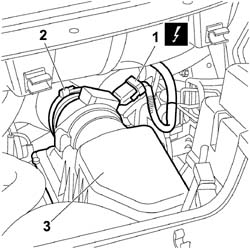
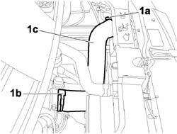
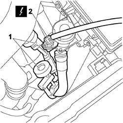
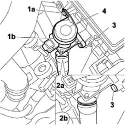

1080G57 SOLENOID VALVE FOR THE INFLOW OF ENGINE COOLANT TO FAP SYSTEM HEAT EXCHANGER - R.R.
- Path
- Procedures > 10 ENGINE > 1080 EXHAUST EMISSION CONTROL SYSTEM > 1080G F.A.P. EMISSION CONTROL SYSTEM > 1080G57 SOLENOID VALVE FOR THE INFLOW OF ENGINE COOLANT TO FAP SYSTEM HEAT EXCHANGER - R.R.
- Kind
- repair procedure (removal / refitting; the operation number is the code)
- Applies to
- engines: 2.2 16V JTD; all production periods
- Interactive page
- https://sloeber94.github.io/elrnDB-fUlss/en/#/179007146
Applies to: engines: 2.2 16V JTD; all production periods
 Removing
Removing
 Refitting
Refitting- Disconnect the negative battery terminal.
- Position a suitable container for collecting any engine coolant leaks.
Description | Connector | |
|---|---|---|
Battery | A001 |
1 - Disconnect the electrical connection for the air flow meter.
Description | Connector | |
|---|---|---|
Air flow meter | See K041 Air flow meter |
2 - Loosen the band (2a) and disconnect the intake manifold air supply pipe (2b).
3 - Undo the fixing bolts and detach the air filter cover.

Applies to: engines: 2.2 16V JTD; all production periods
1. Loosen the retaining bands (1a) and (1b) and disconnect the air supply pipe (1c) from the intercooler to the intake manifold.

Applies to: engines: 2.2 16V JTD; all production periods
1. Fit the pipe restricters to the inlet and outlet pipes.
2. Disconnect the electrical connection from the solenoid valve.

Applies to: engines: 2.2 16V JTD; all production periods
1 - Undo the fixing bolt (1a) and remove the mounting collar (1b)
2 - Release the securing clip (2a) and disconnect the coolant supply pipe (2b) from the solenoid valve (2c).
3. Undo the bolts fixing the solenoid valve to the air filter casing.
4. Detach the solenoid valve from the air filter casing.

Applies to: engines: 2.2 16V JTD; all production periods
Refitting
Removing- Check the condition of the gasket, located on the air filter casing and replace it, if necessary.
- Place the solenoid valve in its housing and tighten the fixing bolts.
- Connect the coolant supply pipe to the solenoid vlve and fit the securing clip.
- Fit the mounting collar and tighten the fixing bolt.
- Remove the pipe restricters from the inlet and outlet pipes.
- Connect the electrical connection to the solenoid valve.
- Connect the intercooler air supply pipe to the intake manifold and tighten the fastening band.
- Fit the air filter cover and tighten the fixing bolts.
- Connect the air supply pipe to the intake manifold and tighten the fastening band.
- Connect the electrical connection to the air flow meter.
Description | Connector | |
|---|---|---|
Air flow meter | See K041 Air flow meter |
- Remove the container for collecting the engine coolant.
- Connect the negative battery terminal.
Description | Connector | |
|---|---|---|
Battery | A001 |